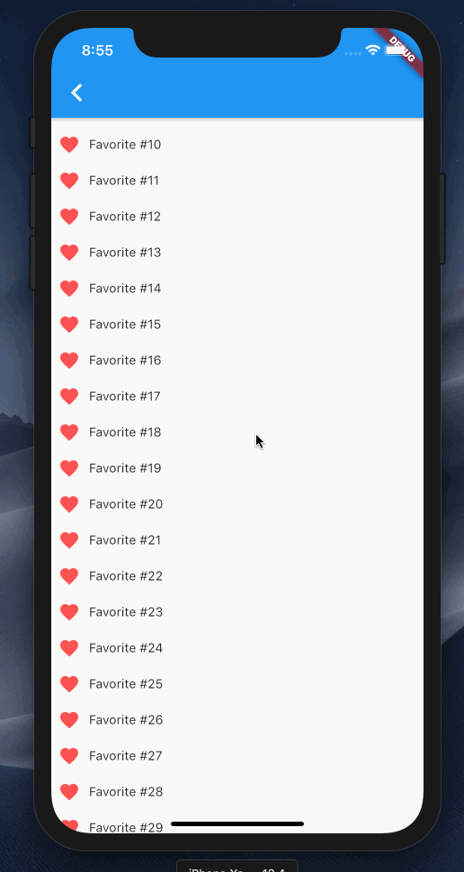

Rendering a combined list view from multiple list using Flutter’s SliverLists
The previous post showed how to flatten grouped data with a header above the items so it can be rendered in a single ListView widget. Now I want to look at a diffent use-case: Rendering lists from distinct data sources after each other. This implementation will use a CustomScrollView and SliverLists. If you’re unfamiliar with slivers, I would recommend reading Slivers, Demystified first, as the below example will just focus on this one narrow use-case, while the overall setup supports much more.
The Example
For this demo I want to render a single list showing the user’s favorite items, then some static content, and below that recommendations of similiar things. Since this simple example only has 3 row types, we could implement it using the ListView approach shown before. But as the row types are never mixed together and since in this example there are only 3 sections (favorites list, static content, recommendations list) I think it’s a good case to create a widget for each section of the scroll view and then combine those into one scrollable list using CustomScrollView.

On the top-level, the widget that sets up the list as a CustomScrollView is nicely readable and gives a nice overview of what will be shown in it:
Widget build(BuildContext context) {
return CustomScrollView(
slivers: <Widget>[
Favorites(),
Static(),
Recommendations(),
],
);
}
Now onto each sliver itself:
Favoritesrenders aSliverListwith aSliverChildBuilderDelegate; so it could handle a large amount of itemsStaticuses aSliverChildListDelegatein itsSliverListas it renders just one very simple widgetRecommendationsuses the same approach aFavorites, just with a different widget for its rows
So the Favorites and Recommendation builder methods look both roughly like this:
Widget build(BuildContext context) {
return SliverList(
delegate: SliverChildBuilderDelegate(
(context, index) {
return XyzRow(data: index); // might be `data[index]` in practice
},
childCount: 100, // might be `data.length` in practice
),
);
}
Overall the whole source code for this example looks to me a lot simpler than what we had in the previous case even though it seems like a more niche use case than rendering a grouped list. I think that stems from the fact that this “lists below each other” is nicely supported by the framework, while the grouped display was not.
In a real app one might need to combine the 2 approaches: Render a grouped list view from a flattened list with a SliverChildBuilderDelegate inside a CustomScrollView which also contains other lists. That is left as an exercise to the interested reader though 😉